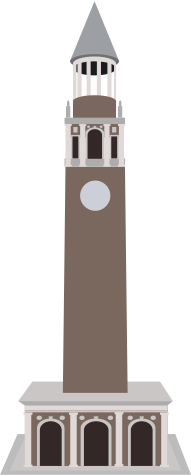
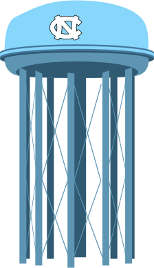
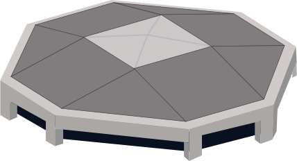

UNC
chapel hill
Click on a landmark to learn more about UNC's history!
Old Well
East Cameron Ave (Facing South Bldg)Chapel Hill, NC 27599
In 1897, UNC President Edwin A. Alderman initiated the redesign of the original ramshackle shelter, which had been the primary source of campus water for more than a century. When it was finished, the new Greek Revival structure was so beautiful that it quickly became the unofficial symbol of the University. In 1954, it was given added beauty with brick walls, plantings and benches. Students traditionally earn good luck when they drink from The Old Well on the first day of classes.